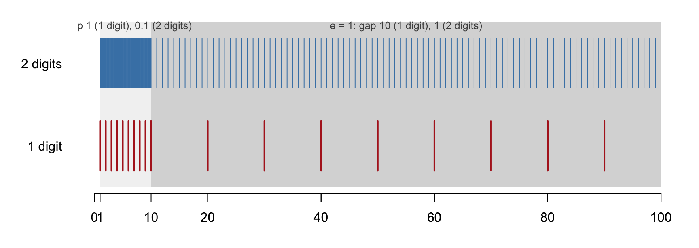

Statistical computation is arithmetic on a machine that stores every number in a fixed number of binary digits. This chapter describes how integers and real numbers are represented, what goes wrong when a computation exceeds the capacity of that representation (overflow, underflow, and roundoff error), and the standard techniques for writing statistical code that avoids these failures: reordering sums, rewriting formulas, and working on the logarithmic scale.
2.1 Representations of Numbers in Computer
2.1.1 Place value
Every number is a string of digits in boxes, and each box has a place value. In base 10,
Everything that follows is a consequence of one fact: the number of boxes is fixed in advance.
2.1.2 Integers
An integer is stored in a fixed number of bits, typically 32 or 64. With \(p\) bits the largest unsigned value is obtained by filling every box with 1, \[
\sum_{i=0}^{p-1} 2^i = 2^p - 1 .
\] A 4-bit example: the largest storable integer is \(1111_2 = 15\), and \(15 + 1 = 16 = 10000_2\) needs a fifth box that does not exist.
2⁴
2³
2²
2¹
2⁰
1
0
0
0
0
The leading 1 has nowhere to go: integer overflow
To represent negative values, one of the boxes is used as a sign bit, leaving \(p-1\) boxes for the magnitude. With 32 bits, a signed integer \(u\) is \[
u = (-1)^{s}\sum_{i=0}^{30} d_i\,2^i, \qquad s\in\{0,1\}.
\] The largest integer has the sign bit \(0\) and the other 31 boxes all equal to \(1\):
and the smallest is its negative, \(u^{\min} = -(2^{31}-1)\). When an integer computation leaves this range, R does not wrap around silently, as C does; it returns NA with a warning.
.Machine$integer.max
[1] 2147483647
## Check upper boundsas.integer(2^31-1) # maximum valid integer
[1] 2147483647
as.integer(2^31) # exceeds limit, returns NA
[1] NA
as.integer(2^31-1) +as.integer(1) # overflows to NA
as.integer(-2^31) # exceeds lower limit, returns NA
[1] NA
A practical consequence: products of moderately large integers overflow easily. 50000L * 50000L is NA in R, while 50000 * 50000 (double precision) is fine. R converts to double automatically for most arithmetic, so integer overflow is rarely a problem in R code; it is a common one in C, Java, and database systems.
50000L *50000L
[1] NA
50000*50000
[1] 2.5e+09
2.1.3 Floating point numbers
A real number is stored in the form of scientific notation: a sign, a mantissa holding the significant digits, and an exponent: \[
x = (-1)^{s} \times 1.d_1 d_2 \cdots d_p \times 2^{\,e}.
\]
sign
mantissa (fixed number of digits)
exponent
+
1
.
d₁
d₂ … dp
×2^
±
e
More precisely, a floating point number \(x\) is represented by a vector of bits \((s,d_0,\ldots,d_{t-1},e_1,\ldots, e_{k-1})\) as, \[
x = (-1)^s \sum_{i=0}^{t-1}d_i2^{-i}\times 2^{\sum_{i=0}^{k-1}e_i2^i-2^{k-1}}.
\] The leading mantissa bit is always 1 for a normalized number and need not be stored, and the exponent is stored with an offset so that both negative and positive exponents fit in unsigned bits. Double precision (double in R, the IEEE 754 standard) uses 64 bits:
part
bits
consequence
sign
1
mantissa
52
about 16 significant decimal digits
exponent
11
\(e \in [-1022,\ 1023]\), i.e. magnitudes from \(10^{-308}\) to \(10^{308}\)
2.1.4 A toy floating point system
To see what goes wrong, it is easier to work in a decimal toy computer with a 4-digit mantissa and a 1-digit exponent, \(e\in[-9,9]\):
sign
1
10⁻¹
10⁻²
10⁻³
exp
+
3
.
1
4
2
×10^
0
\(3.142\times10^{0}\), the closest storable value to \(\pi\)
Three things can go wrong, all caused by the boxes being finite:
Overflow: the exponent box is too small for a large number.
Underflow: the exponent box is too small for a tiny number.
Roundoff: the mantissa boxes are too few for all the digits.
2.1.5 Significance of the Mantissa: A Zoom Model
Think of a floating point number as a ruler and a zoom setting. The mantissa is a fixed ruler with equally spaced marks; the exponent is a zoom factor \(10^{e}\) that stretches the ruler to cover the interval \([10^{e}, 10^{e+1})\). The number of marks never changes, so the more the ruler is stretched, the farther apart the marks land on the number line.
The simplest case has a one-digit mantissa: the ruler has nine marks, \(1, 2, \ldots, 9\), and a number is stored as \(d\times10^{e}\) with \(d\in\{1,\ldots,9\}\).
1
exp
d
×10^
e
One mantissa digit: the ruler marks are \(1\times10^{e}, 2\times10^{e}, \ldots, 9\times10^{e}\)
zoom \(e\)
interval \([10^e, 10^{e+1})\)
storable numbers
gap
0
\([1, 10)\)
\(1, 2, 3, \ldots, 9\)
\(1\)
1
\([10, 100)\)
\(10, 20, 30, \ldots, 90\)
\(10\)
2
\([100, 1000)\)
\(100, 200, \ldots, 900\)
\(100\)
\(-1\)
\([0.1, 1)\)
\(0.1, 0.2, \ldots, 0.9\)
\(0.1\)
Within each zoom level the storable numbers are evenly spaced, and the spacing is multiplied by \(10\) each time the zoom goes up one level. Every real number between two marks is rounded to the nearer mark: \(24\to20\), \(27\to30\), \(2.4\to2\), and \(0.27\to0.3\).
Adding mantissa digits adds marks to the ruler without changing the zoom mechanism. With a leading digit and \(t\) further digits there are \(9\times10^{t}\) marks in \([10^e, 10^{e+1})\), and the gap at zoom \(e\) is \(10^{e-t}\).

Figure 2.1: Representable numbers in \([1, 100)\) for a mantissa of 1 and 2 decimal digits. The two zoom levels \([1, 10)\) and \([10, 100)\) are shaded; within each, the marks are evenly spaced, and the spacing is ten times larger at the higher zoom.
The picture explains the two facts that matter for computation:
The absolute gap grows with the magnitude, because the same ruler is stretched more; the relative gap, gap divided by magnitude, stays between \(10^{-t}\) and \(10^{-t-1}\) at every zoom level.
The relative gap near \(1\) is the machine epsilon\(\epsilon\): the smallest \(\epsilon\) such that \(1+\epsilon \neq 1\) on the computer. It is the distance between the first two marks of the ruler at zoom \(e = 0\). In the one-digit system \(\epsilon = 1\), so \(1 + 0.4\) rounds back to \(1\); in the four-digit toy system \(\epsilon = 0.001\).
A binary computer works the same way with a ruler of \(2^{t}\) marks per doubling instead of \(9\times10^{t}\) marks per decade. For doubles, \(t = 52\) and \(\epsilon = 2^{-52}\approx 2.2\times10^{-16}\).
.Machine$double.eps # 2^-52
[1] 2.220446e-16
1+2^-52==1
[1] FALSE
1+2^-53==1# half an epsilon rounds back to 1
[1] TRUE
For doubles the gap at zoom level \([2^e, 2^{e+1})\) is \(2^{e-52}\). Near \(2^{52}\) the spacing is exactly \(1\), and in \([2^{53}, 2^{54})\) it is \(2\), so odd integers can no longer be represented.
This is why a double can hold every integer only up to \(2^{53}\approx 9\times10^{15}\), and why counters or identifiers above that size must be kept as integers or character strings.
2.1.6 Overflow and underflow
The largest toy number fills every box with 9, \(9.999\times10^{9}\). The next number, \(10^{10}\), needs an exponent of two digits and cannot be stored: this is overflow, and the result is recorded as Inf. At the other end, \(10^{-9}\) is the smallest positive toy number, and \(10^{-10}\)underflows to \(0\).
+
1
.
0
0
0
×10^
10
\(10^{10}\): overflow, stored as Inf
+
1
.
0
0
0
×10^
-10
\(10^{-10}\): underflow, stored as 0
For doubles the largest value is about \(1.8\times10^{308}\) (just below \(2^{1024}\)). The smallest positive value with full 52-bit precision is \(2^{-1022}\approx 2.2\times10^{-308}\); below that, the IEEE standard allows “subnormal” numbers with progressively fewer significant bits down to \(2^{-1074}\approx 4.9\times10^{-324}\), after which the value is \(0\).
Figure 2.2: Overflow and underflow regions on the number line for double precision
## largest double precision floating-point number.Machine$double.xmax
[1] 1.797693e+308
2^1023
[1] 8.988466e+307
2^1024# overflows to Inf
[1] Inf
## smallest double precision floating-point numbers.Machine$double.xmin # smallest with full precision, 2^-1022
[1] 2.225074e-308
2^(-1074) # smallest subnormal
[1] 4.940656e-324
2^(-1075) # underflows to 0
[1] 0
Overflow is loud: Inf propagates and usually produces NaN or an error somewhere downstream. Underflow is quiet: a probability that underflows to \(0\) simply produces log(0) = -Inf or a likelihood ratio of 0/0, and the code may run to completion with a wrong answer.
2.2 Rounding Error and Methods for Preventing It
2.2.1 Roundoff error
Compute \(1 + 0.0001\) in the toy system. The exact answer \(1.0001\) needs a fifth mantissa box:
1
10⁻¹
10⁻²
10⁻³
10⁻⁴
exp
+
1
.
0
0
0
1
×10^
0
The red digit does not fit and is rounded away: the stored result is exactly \(1.000\)
In general the stored result of \(a+b\) (or \(a\times b\), \(a/b\), …) is the nearest representable number to the exact result. Each single operation therefore has relative error at most about \(\epsilon\), which is harmless on its own. The concern is when these errors accumulate over many operations or are amplified by the structure of a formula. Two patterns do the amplifying:
adding a large + small number, where the small number is partly or wholly rounded away;
subtracting large − large nearly equal numbers, where the leading digits cancel and only the roundoff errors survive (catastrophic cancellation).
2.2.2 Computing sums: avoiding large + small
The mantissa has a finite capacity, so adding something extremely small, like \(2^{-54}\), to \(1\) loses the small term entirely because its bits fall outside the 52 stored digits.
Figure 2.3: Roundoff error when adding a large and a small number
Consider \(1 + 0.0001 + 0.0001\) in the toy system. Evaluated left to right, \((1 + 0.0001) + 0.0001\), the first addition rounds to \(1.000\), and so does the second: both small terms are lost. Evaluated as \(1 + (0.0001 + 0.0001) = 1 + 0.0002\), the intermediate sum \(2.000\times10^{-4}\) is exact, and only the final addition rounds. With four mantissa digits the final result is still \(1.000\), but the point is general: adding the small terms among themselves first commits only one roundoff error, whereas adding them one at a time to the large number commits one per term, and these accumulate.
The following R demonstration makes the same point at machine precision. f2 attempts to add \(2^{-53}\) (half an epsilon) \(2^{13}\) times, but because \(1 + 2^{-53} = 1\) at every single step, the final sum is simply \(1\) instead of \(1 + 2^{-40}\). Grouping the small numbers and adding them together before adding them to the large number (f6s) recovers the correct answer.
## the target valuef0 <-1+2^(-40)f0
[1] 1
## adding 2^-52 (one epsilon) 2^12 times works: each addition changes the sumf1 <-1; i <-1while (i <=2^12) { f1 <- f1 +2^(-52); i <- i +1 }f1
[1] 1
## adding 2^-53 (half an epsilon) 2^13 times fails: 1 + 2^-53 rounds to 1 every timef2 <-1; i <-1while (i <=2^13) { f2 <- f2 +2^(-53); i <- i +1 }f2
[1] 1
## this difference is not due to number display in Rf0 == f1
## the fix: accumulate the small numbers first, then add to 1f6s <-0; i <-1while (i <=2^14) { f6s <- f6s +2^(-54); i <- i +1 }f6s
[1] 9.094947e-13
f6 <- f6s +1; f6
[1] 1
f0 == f6
[1] TRUE
Rules for accurate summation
Add numbers of similar magnitude together; when summing terms of very different sizes, add the smallest first (sort ascending).
Pairwise summation: sum the two halves of the vector recursively, so that partial sums stay of similar size. R’s sum() uses this together with extended-precision accumulation, which is why sum() beat the naive loop above.
Kahan compensated summation: keep track of the part rounded away at each step and add it back at the next step.
x <-c(1, rep(1e-16, 1e4)) # exact sum is 1 + 1e-12naive_sum <-function(x) { s <-0; for (v in x) s <- s + v; s }kahan_sum <-function(x) { s <-0; c <-0# c holds the running roundoff errorfor (v in x) { y <- v - c; t <- s + y; c <- (t - s) - y; s <- t } s }c(naive =naive_sum(x) -1,sorted =naive_sum(sort(x)) -1,kahan =kahan_sum(x) -1,builtin =sum(x) -1,exact =1e-12)
The naive loop loses every one of the \(10^4\) small terms; sorting recovers most of the answer, and Kahan summation and R’s sum() recover it to full precision.
We can use log() to translate the 52-bit limit into other bases, which tells us at roughly what decimal place precision is lost (about 15 to 16 significant decimal digits).
log(2^(-52)) # base e: about -36
[1] -36.04365
1+exp(-35)
[1] 1
1+exp(-37) # evaluates to exactly 1
[1] 1
log(2^(-52), base =10) # base 10: about -15.7
[1] -15.65356
1+1e-15==1
[1] FALSE
1+1e-16==1
[1] TRUE
2.2.3 Computing \(e^x\): avoiding large − large
The Taylor series, \[
e^x \approx \sum_{k=0}^{K}\frac{x^k}{k!} = 1 + x + \frac{x^2}{2!} + \frac{x^3}{3!} + \cdots,
\] works well for \(x > 0\) but fails for large negative \(x\). For \(x = -20\) the terms alternate in sign and are huge relative to the answer \(e^{-20}\approx 2\times10^{-9}\):
\(k\)
0
1
2
…
20
…
\(x^k/k!\)
\(1\)
\(-20\)
\(200\)
…
\(4.3\times10^{7}\)
…
Each term carries a roundoff error of relative size \(\epsilon \approx 10^{-16}\), i.e. absolute size \(\approx 4\times10^{-9}\) for the largest terms, which is as large as the answer itself. Subtracting nearly equal large numbers leaves only their errors: catastrophic cancellation.
The function fexp below implements the series with a stopping rule based on the relative size of the current term. With debug = TRUE it returns the internal steps rather than the final answer.
library(knitr)fexp <-function(x, debug =FALSE) { i <-0; expx <-1; u <-1if (debug) debug_list <-list()while (abs(u) >1e-20*abs(expx)) { i <- i +1 u <- u * x / i expx <- expx + uif (debug) debug_list[[i]] <-c(Step = i, Term_u = u, exp_x = expx) }if (debug) return(do.call(rbind, debug_list)) expx}test_vals <-c(10, 20, 60, -1, -10, -20, -50)res1 <-data.frame(x = test_vals, Built_in_Exp =exp(test_vals), Taylor_fexp =sapply(test_vals, fexp))kable(res1, caption ="Built-in exp() versus the naive Taylor series fexp()")
Built-in exp() versus the naive Taylor series fexp()
x
Built_in_Exp
Taylor_fexp
10
2.202647e+04
2.202647e+04
20
4.851652e+08
4.851652e+08
60
1.142007e+26
1.142007e+26
-1
3.678794e-01
3.678794e-01
-10
4.540000e-05
4.540000e-05
-20
0.000000e+00
0.000000e+00
-50
0.000000e+00
1.107293e+04
For positive \(x\) the series is accurate to all printed digits. For \(x = -10\) the answer is already off in the fourth digit, for \(x = -20\) it is wrong in the first digit, and fexp(-50) yields a completely wrong, negative number. Running it in debug mode shows the massive terms cancelling each other out.
Debug trace for fexp(-50) showing catastrophic cancellation
Step
Term_u
exp_x
1
-5.000000e+01
-4.900000e+01
2
1.250000e+03
1.201000e+03
3
-2.083333e+04
-1.963233e+04
4
2.604167e+05
2.407843e+05
5
-2.604167e+06
-2.363382e+06
6
2.170139e+07
1.933801e+07
7
-1.550099e+08
-1.356719e+08
8
9.688120e+08
8.331401e+08
9
-5.382289e+09
-4.549149e+09
10
2.691144e+10
2.236230e+10
…
NA
NA
NA
[158,]
158
0.000000e+00
1.107293e+04
[159,]
159
0.000000e+00
1.107293e+04
[160,]
160
0.000000e+00
1.107293e+04
[161,]
161
0.000000e+00
1.107293e+04
[162,]
162
0.000000e+00
1.107293e+04
[163,]
163
0.000000e+00
1.107293e+04
[164,]
164
0.000000e+00
1.107293e+04
[165,]
165
0.000000e+00
1.107293e+04
[166,]
166
0.000000e+00
1.107293e+04
[167,]
167
0.000000e+00
1.107293e+04
The largest terms reach about \(10^{20}\); their roundoff errors are of order \(10^{4}\), and the true answer \(e^{-50}\approx 2\times10^{-22}\) is invisible beneath them.
Fix by reformulating. For \(x>0\) all terms are positive, so no cancellation occurs. Therefore compute \(e^{|x|}\) and invert the result if \(x\) was negative: \[
e^{-x} = \frac{1}{e^{x}}, \qquad x > 0 .
\]
fexp2 <-function(x) { xa <-abs(x); i <-0; expx <-1; u <-1while (u >1e-20* expx) { i <- i +1; u <- u * xa / i; expx <- expx + u }if (x >=0) expx else1/ expx}test_vals_neg <-c(-10, -20, -50)res2 <-data.frame(x = test_vals_neg, Built_in_Exp =exp(test_vals_neg), Robust_fexp2 =sapply(test_vals_neg, fexp2))kable(res2, caption ="Robust fexp2() for negative arguments")
Robust fexp2() for negative arguments
x
Built_in_Exp
Robust_fexp2
-10
4.54e-05
4.54e-05
-20
0.00e+00
0.00e+00
-50
0.00e+00
0.00e+00
The general principle: rearrange a formula so that quantities of similar magnitude and the same sign are combined, and avoid computing a small result as the difference of two large numbers.
A second example of the same principle. The function \(f(x) = e^x - 1\) is needed in interest-rate and survival calculations for small \(x\). Computing exp(x) - 1 directly subtracts two numbers near 1, and for \(x = 10^{-10}\) loses six of the sixteen digits; expm1(x) uses a series for small \(x\) and is exact to machine precision. The same holds for \(\log(1+x)\) and log1p(x).
x <-1e-10c(naive =exp(x) -1, expm1 =expm1(x), series = x + x^2/2)
naive expm1 series
1e-10 1e-10 1e-10
x <-1e-20c(naive =log(1+ x), log1p =log1p(x))
naive log1p
0e+00 1e-20
2.2.4 Computing variance: avoiding large − large
Two algebraically identical formulas for the sum of squared deviations: \[
\underbrace{\sum_{i=1}^{n}(x_i - \overline{x})^2}_{\text{two-pass}}
\;=\;
\underbrace{\sum_{i=1}^{n} x_i^2 - \frac{\left(\sum_i x_i\right)^2}{n}}_{\text{one-pass}}.
\]
The one-pass formula needs only \(\sum x_i\) and \(\sum x_i^2\), computed in a single sweep of the data, which made it attractive for hand calculators and for streaming data. But when the \(x_i\) are large and close together, \(\sum x_i^2\) and \((\sum x_i)^2/n\) are both huge and nearly equal, and the subtraction is large − large.
Take \(x = (1, 2, 3)\): the deviations are \((-1, 0, 1)\), so \(\sum(x_i-\overline x)^2 = 2\). Now shift by \(M = 10^{8}\), giving \(x = (M+1, M+2, M+3)\). The deviations and the answer are unchanged, but the one-pass formula computes \[
\sum x_i^2 \approx 3\times10^{16}, \qquad \frac{(\sum x_i)^2}{n} \approx 3\times10^{16}, \qquad \text{difference} = 2.
\] With 16 significant digits, \(3\times10^{16}\) is stored with a gap of about \(4\) between neighbouring representable numbers, so the true answer \(2\) lives entirely in the lost digits.
16 mantissa digits
lost
3
.
0
0
0
0
0
0
1
2
0
0
0
0
0
1
4
×10^16
## one-pass (computational) formulavar1 <-function(x) { n <-length(x); (sum(x^2) -sum(x)^2/ n) / (n -1) }## two-pass formula (centering on the mean)var2 <-function(x) { n <-length(x); sum((x -mean(x))^2) / (n -1) }## small data works fine for bothx <-c(1, 2, 3)c(var1(x), var2(x), var(x))
[1] 1 1 1
## a large shift exposes catastrophic cancellation in var1x <-c(1, 2, 3) +1e8c(var1(x), var2(x), var(x))
[1] 0 1 1
x <-c(1, 2, 3) +1e10c(var1(x), var2(x), var(x))
[1] -32768 1 1
The failure sets in gradually. The error of the one-pass formula is of order \(\epsilon\,M^2 n\), so it becomes visible once \(M^2\epsilon\) is comparable to the true variance, i.e. around \(M\approx 10^{8}\) for a variance of 1. The following scan shows the one-pass result drifting away from 1 and eventually becoming negative, which is impossible for a variance.
M <-10^(0:10)res <-t(sapply(M, function(m) { x <-c(1, 2, 3) + m; c(M = m, one_pass =var1(x), two_pass =var2(x)) }))kable(res, caption ="One-pass versus two-pass variance as the data are shifted by M", digits =6)
One-pass versus two-pass variance as the data are shifted by M
M
one_pass
two_pass
1e+00
1
1
1e+01
1
1
1e+02
1
1
1e+03
1
1
1e+04
1
1
1e+05
1
1
1e+06
1
1
1e+07
1
1
1e+08
0
1
1e+09
0
1
1e+10
-32768
1
Fixes
Two-pass: compute \(\overline x\) first, then \(\sum (x_i - \overline x)^2\). The deviations are small and of similar size, so no cancellation occurs. This is what var() does.
Shifted one-pass: subtract any convenient constant \(c \approx \overline x\), for instance \(c = x_1\), before applying the one-pass formula. The identity \[
\sum (x_i-\overline x)^2 = \sum (x_i - c)^2 - \frac{\left(\sum (x_i - c)\right)^2}{n},
\] holds for every \(c\), and with \(c\) near the mean the two terms on the right are no longer huge.
Welford’s online algorithm updates the running mean \(\overline x_k\) and running sum of squares \(S_k = \sum_{i\le k}(x_i - \overline x_k)^2\) one observation at a time, \[
\overline x_k = \overline x_{k-1} + \frac{x_k - \overline x_{k-1}}{k}, \qquad S_k = S_{k-1} + (x_k - \overline x_{k-1})(x_k - \overline x_k),
\] and is the method of choice for streaming data, where a two-pass computation is impossible.
var_shifted <-function(x) { n <-length(x); d <- x - x[1]; (sum(d^2) -sum(d)^2/ n) / (n -1) }var_welford <-function(x) { m <-0; S <-0for (k inseq_along(x)) { m_old <- m; m <- m + (x[k] - m) / k; S <- S + (x[k] - m_old) * (x[k] - m) } S / (length(x) -1) }x <-c(1, 2, 3) +1e10c(one_pass =var1(x), shifted =var_shifted(x), welford =var_welford(x), two_pass =var2(x))
one_pass shifted welford two_pass
-32768 1 1 1
2.3 Methods for Mitigating Overflow and Underflow Errors
2.3.1 Where overflow and underflow arise in statistics
Likelihoods are products of many probabilities, and normalizing constants involve factorials or exponentials: \[
\prod_{i=1}^{2000} p(x_i) = \left(\tfrac12\right)^{2000} \approx 10^{-602} \quad\to\quad \text{underflow to } 0,
\]\[
1000! \approx 4\times10^{2567} \quad\to\quad \text{overflow to } \infty,
\]\[
\text{logistic: } \frac{e^{x}}{1+e^{x}} \text{ at } x = 1000 \quad\to\quad \frac{\infty}{\infty} = \texttt{NaN}.
\]
Two remedies are available: change the algebraic expression so that the intermediate quantities stay in range, or work on the logarithmic scale.
2.3.2 Changing the algebraic expression
Two equivalent forms of the logistic (sigmoid) function: \[
\sigma(x) = \frac{e^{x}}{1+e^{x}} = \frac{1}{1+e^{-x}}.
\]
\(x\)
\(e^{x}/(1+e^{x})\)
\(1/(1+e^{-x})\)
\(+1000\)
\(e^{x}=\infty\), $/= $ NaN ✗
\(e^{-x}=0\), \(1/1 = 1\) ✓
\(-1000\)
\(e^{x}=0\), \(0/1 = 0\) ✓
\(e^{-x}=\infty\), \(1/\infty = 0\) ✓
Evaluating the first form at a large positive value yields \(\infty/\infty\); the second form lets \(e^{-x}\) underflow harmlessly to \(0\) and computes \(1/(1+0) = 1\). In this case the second form is safe at both ends, because a division by \(\infty\) gives \(0\) correctly. In general one picks the form in which the exponential has a non-positive argument: \[
\sigma(x) = \begin{cases} 1/(1+e^{-x}) & x \ge 0\\ e^{x}/(1+e^{x}) & x < 0.\end{cases}
\]
p1 <-function(theta) exp(theta) / (1+exp(theta))p2 <-function(theta) 1/ (1+exp(-theta))## large positive theta breaks p1, works in p2theta <-2000c(p1 =p1(theta), p2 =p2(theta))
p1 p2
NaN 1
## large negative theta works for boththeta <--2000c(p1 =p1(theta), p2 =p2(theta))
p1 p2
0 0
## the piecewise form is safe everywhere and keeps full precision in both tailssigmoid <-function(x) ifelse(x >=0, 1/ (1+exp(-x)), exp(x) / (1+exp(x)))sigmoid(c(-2000, -20, 0, 20, 2000))
Built-in functions. Software provides functions written specifically to avoid cancellation and overflow, and they should be used in preference to the naive composition:
The last line shows both failures at once: 1 - pnorm(10) is 1 - 1 = 0 in double precision, so the naive answer is -Inf, while the true value is about \(-53.2\).
2.3.3 Representing numbers in logarithmic form
Represent a positive number \(x\) by \(\ell_x = \log x\): \[
x = e^{2000} \iff \ell_x = 2000, \qquad x = e^{-2000} \iff \ell_x = -2000 .
\] Numbers that overflow or underflow in ordinary form are ordinary numbers on the log scale. The cost is that each operation \(f\) must be translated to the log scale: \[
x_1,\dots,x_n \xrightarrow{\;f\;} y \qquad\Longleftrightarrow\qquad \ell_1,\dots,\ell_n \xrightarrow{\;\tilde f\;} \ell_y = \log f(e^{\ell_1},\dots,e^{\ell_n}).
\]
Products and quotients are the easy case: \[
\log(x_1 x_2) = \ell_1 + \ell_2, \qquad \log\left(\prod_{i=1}^{n} x_i\right) = \sum_{i=1}^{n} \ell_i, \qquad \log\frac{x_1}{x_2} = \ell_1 - \ell_2.
\] In particular \(\log \prod_i p(x_i) = \sum_i \log p(x_i)\): always compute the log-likelihood, never the likelihood.
log_x <-800; x <-exp(log_x); x # overflow
[1] Inf
log_y <-805; y <-exp(log_y); y # overflow
[1] Inf
x / y # Inf/Inf = NaN
[1] NaN
log_xovery <- log_x - log_y # subtracting logs is safelog_xovery
[1] -5
exp(log_xovery)
[1] 0.006737947
## likelihood versus log-likelihood for 2000 fair-coin tossesp <-rep(0.5, 2000)c(likelihood =prod(p), log_likelihood =sum(log(p)))
likelihood log_likelihood
0.000 -1386.294
2.3.4 The log-sum-exp trick
Sums are the hard case: \(\log(x_1 + x_2) \neq \ell_1 + \ell_2\). We need \[
\log\left(\sum_{i=1}^{n} x_i\right) = \log\left(\sum_{i=1}^{n} e^{\ell_i}\right),
\] but the \(e^{\ell_i}\) may overflow or underflow. Let \(m = \max_i \ell_i\) and factor it out: \[
\log\left(\sum_{i=1}^{n} e^{\ell_i}\right)
= \log\left(e^{m}\sum_{i=1}^{n} e^{\ell_i - m}\right)
= m + \log\left(\sum_{i=1}^{n} e^{\ell_i - m}\right).
\]
Every \(\ell_i - m \le 0\), so \(e^{\ell_i - m} \in (0, 1]\) and nothing overflows; the largest term is \(e^{0} = 1\), so the sum is at least 1 and cannot underflow. Terms far below the maximum underflow to \(0\) individually, but they would have contributed nothing at 16-digit precision anyway.
Illustration with \(x_i = e^{2000}, e^{2001}, e^{2002}\), each of which overflows to Inf:
Example: log-likelihood of a mixture. The density of a two-component normal mixture is \(f(y) = \pi_1\varphi(y;\mu_1,1) + \pi_2\varphi(y;\mu_2,1)\), a sum inside a product. For an observation far from both means, both component densities underflow and the naive log-likelihood is -Inf; with log-sum-exp applied observation by observation it is finite and correct.
y <-c(-1, 0.5, 2, 45) # the last value is far from both meansmu <-c(0, 3); w <-c(0.6, 0.4)naive <-sum(log(w[1] *dnorm(y, mu[1]) + w[2] *dnorm(y, mu[2])))stable <-sum(sapply(y, function(yi) log_sum_exp(log(w) +dnorm(yi, mu, log =TRUE))))c(naive = naive, stable = stable)
naive stable
-Inf -889.3333
Example: log-softmax. The softmax probabilities \(p_k = e^{x_k}/\sum_j e^{x_j}\) appear in multinomial logistic regression and neural networks. Their logarithm is \(\log p_k = x_k - \log\sum_j e^{x_j}\), and the second term is a log-sum-exp.
x <-c(1000, 1001, 1005)naive <-log(exp(x) /sum(exp(x)))stable <- x -log_sum_exp(x)rbind(naive, stable, probabilities =exp(stable))
[,1] [,2] [,3]
naive NaN NaN NaN
stable -5.024744890 -4.02474489 -0.02474489
probabilities 0.006573263 0.01786798 0.97555875
2.3.5 Differences on the log scale
For \(x > y > 0\) with \(\ell_x = \log x\), \(\ell_y = \log y\): \[
\log(x - y) = \log\left(e^{\ell_x}\left(1 - e^{\ell_y - \ell_x}\right)\right) = \ell_x + \log\left(1 - e^{\ell_y - \ell_x}\right).
\] Since \(\ell_y - \ell_x < 0\), \(e^{\ell_y-\ell_x}\in(0,1)\) and there is no overflow. When \(x \approx y\), the factor \(1 - e^{\ell_y-\ell_x}\) is itself a large − large subtraction; log1p(-exp(ly - lx)) avoids it.
log_minus_exp <-function(log_x, log_y) {if (log_x < log_y) stop("the first argument must be the larger") log_x +log1p(-exp(log_y - log_x))}log_minus_exp(2020, 2000)
[1] 2020
exp(2000) -exp(1999) # direct subtraction: Inf - Inf = NaN
[1] NaN
## nearly equal arguments: log1p keeps the precision that log(1 - .) would loselx <-10; ly <-10-1e-12c(with_log1p =log_minus_exp(lx, ly), with_log = lx +log(1-exp(ly - lx)), exact =log(exp(lx) -exp(ly)))
A statistical use of the difference formula is the survival function of a discrete distribution, \(\log P(X > k) = \log\big(1 - P(X\le k)\big)\), when \(P(X\le k)\) is available only as a log-probability close to \(0\).
2.4 Summary
Integers occupy a fixed number of bits; exceeding \(2^{31}-1\) gives NA in R.
Doubles store a sign, a 52-bit mantissa (about 16 decimal digits), and an 11-bit exponent (magnitudes \(10^{-308}\) to \(10^{308}\)). Neighbouring doubles are spaced at a relative distance of about \(\epsilon = 2^{-52}\); integers above \(2^{53}\) are not all representable.
Overflow produces Inf, underflow produces 0; the latter is silent and therefore more dangerous.
Roundoff error is amplified by adding large + small (fix: add small terms first, pairwise or compensated summation) and by subtracting large − large (fix: reformulate so that same-sign quantities of similar size are combined, as in \(e^{-x} = 1/e^{x}\) and the two-pass variance).
Overflow and underflow are avoided by rewriting expressions so that exponentials have non-positive arguments, by using purpose-built functions (log1p, expm1, lgamma, dnorm(log = TRUE)), and by working on the log scale, where products become sums and sums are handled by the log-sum-exp trick.
2.5 Exercises
Question 1. How do you compute \[
\log\left(\frac{1}{1+e^{-x}}\right),
\] so as to avoid overflow and underflow of \(e^{-x}\), for both large positive and large negative \(x\)? (Hint: write it as \(-\log(1+e^{-x})\) and consider log1p and the two forms of the sigmoid.)
Question 2 (log-softmax). How do you compute \[
\log\left(\frac{e^{x_k}}{\sum_{j=1}^{K} e^{x_j}}\right),
\] so as to avoid underflow and overflow of \(e^{x_j}\)? Verify your formula against the log-softmax example above for \(x = (1000, 1001, 1005)\) and for \(x = (-1000, -1001, -1005)\).
Question 3. The one-pass variance formula fails for \(x = (M+1, M+2, M+3)\) with \(M = 10^{8}\). Predict the smallest \(M\) (a power of 10) at which the one-pass result in R first differs from \(2\), then verify using the scan in the variance section.
Question 4. Write a function log_dbinom(k, n, p) that returns \(\log\binom{n}{k}p^k(1-p)^{n-k}\) for \(n = 10^5\) without overflow or underflow, using lchoose and log1p, and compare it with dbinom(k, n, p, log = TRUE).
Question 5. Implement Welford’s algorithm for the sample covariance of two variables and check it against cov() on data shifted by \(10^{10}\).